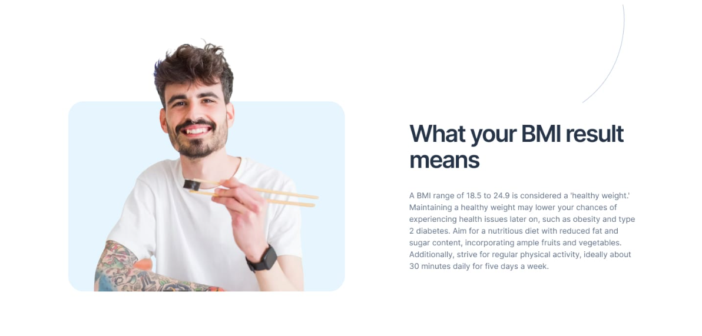

Healthy eating
Healthy eating promotes weight control,
disease prevention, better digestion,
immunity,
mental clarity,
and mood.
Regular exercise
Exercise improves fitness,
aids weight control, elevates mood,
and reduces disease
risk,
fostering wellness and longevity.
Adequate sleep
Sleep enhances mental clarity,
emotional stability,
and physical wellness,
promoting
overall restoration and rejuvenation.
Limitations of BMI
Although BMI is often a practical indicator of healthy weight,
it is not suited for
every person. Specific groups should carefully consider their BMI outcomes,
and in
certain cases,
the measurement may not be beneficial to use.
gender
The development and body fat composition of girls and boys vary with age.
Consequently,
a child's age and gender
are considered when evaluating their BMI.
Age
In aging individuals, increased body
fat and muscle loss may
cause BMI to underestimate
body fat content.

Muscle
BMI may misclassify muscular
individuals as overweight or obese,
as it doesn't
differentiate muscle from fat.

Pregnancy
Expectant mothers experience weight gain due
to their growing baby. Maintaining a
healthy pre-pregnancy BMI is advisable to
minimise health risks for both mother
and child.

Race
Certain health concerns may affect individuals
of some Black and Asian origins at
lower BMIs than others. To learn more,
it is advised to discuss this with your
GP or practice nurse.
individuals as overweight or obese,
as it doesn't differentiate muscle from fat.
to their growing baby. Maintaining a healthy pre-pregnancy BMI is advisable to
minimise health risks for both mother and child.
of some Black and Asian origins at lower BMIs than others. To learn more,
it is advised to discuss this with your GP or practice nurse.